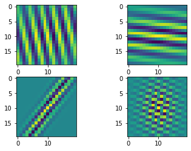
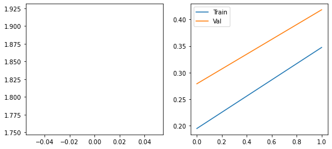
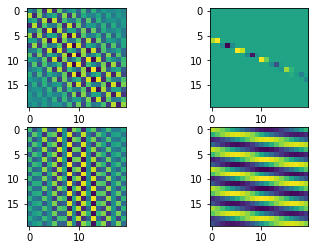
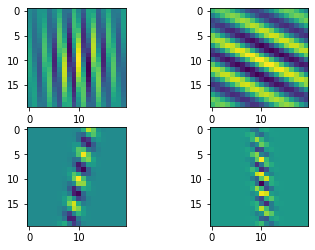
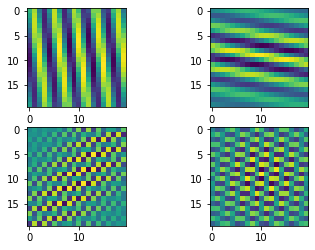

import numpy as np
import matplotlib.pyplot as plt
from einops import rearrange, repeat
import tensorflow as tf
from tensorflow.keras import layers
from tensorflow.keras.datasets import mnist
from flayers.layers import RandomGaborMultiple Random Gabor experiment
In this quick experiment we will be training an MNIST classifier using multiple
RandomGabor layers.
Library importing
Data loading
We will be using MNIST for a simple and quick test.
(X_train, Y_train), (X_test, Y_test) = mnist.load_data()
X_train = repeat(X_train, "b h w -> b h w c", c=1)/255.0
X_test = repeat(X_test, "b h w -> b h w c", c=1)/255.0
X_train.shape, Y_train.shape, X_test.shape, Y_test.shape((60000, 28, 28, 1), (60000,), (10000, 28, 28, 1), (10000,))Definition of simple model
model = tf.keras.Sequential([
RandomGabor(n_gabors=4, size=20, input_shape=(28,28,1)),
layers.MaxPool2D(2),
RandomGabor(n_gabors=4, size=20),
layers.MaxPool2D(2),
RandomGabor(n_gabors=4, size=20),
layers.MaxPool2D(2),
layers.GlobalAveragePooling2D(),
layers.Dense(10, activation="softmax")
])
model.compile(optimizer="adam",
loss="sparse_categorical_crossentropy",
metrics=["accuracy"])
model.summary()2022-09-08 10:28:47.259611: I tensorflow/core/common_runtime/gpu/gpu_device.cc:1510] Created device /job:localhost/replica:0/task:0/device:GPU:0 with 5435 MB memory: -> device: 0, name: NVIDIA GeForce GTX TITAN Black, pci bus id: 0000:83:00.0, compute capability: 3.5Model: "sequential"
_________________________________________________________________
Layer (type) Output Shape Param #
=================================================================
random_gabor (RandomGabor) (None, 28, 28, 4) 26
_________________________________________________________________
max_pooling2d (MaxPooling2D) (None, 14, 14, 4) 0
_________________________________________________________________
random_gabor_1 (RandomGabor) (None, 14, 14, 4) 26
_________________________________________________________________
max_pooling2d_1 (MaxPooling2 (None, 7, 7, 4) 0
_________________________________________________________________
random_gabor_2 (RandomGabor) (None, 7, 7, 4) 26
_________________________________________________________________
max_pooling2d_2 (MaxPooling2 (None, 3, 3, 4) 0
_________________________________________________________________
global_average_pooling2d (Gl (None, 4) 0
_________________________________________________________________
dense (Dense) (None, 10) 50
=================================================================
Total params: 128
Trainable params: 128
Non-trainable params: 0
_________________________________________________________________We can show the initial Gabor filters:
model.layers[0].show_filters()2022-09-08 10:28:50.838435: I tensorflow/compiler/mlir/mlir_graph_optimization_pass.cc:185] None of the MLIR Optimization Passes are enabled (registered 2)
2022-09-08 10:28:51.081995: I tensorflow/core/util/cuda_solvers.cc:180] Creating CudaSolver handles for stream 0x5626d6503e40
model.layers[2].show_filters()model.layers[4].show_filters()
history = model.fit(X_train, Y_train, batch_size=128, epochs=100, validation_split=0.2)Epoch 1/1002022-09-08 10:29:07.139561: I tensorflow/stream_executor/cuda/cuda_dnn.cc:369] Loaded cuDNN version 8100
2022-09-08 10:29:07.594658: I tensorflow/core/platform/default/subprocess.cc:304] Start cannot spawn child process: No such file or directory375/375 [==============================] - 42s 79ms/step - loss: 653.6666 - accuracy: 0.1011 - val_loss: 59.0548 - val_accuracy: 0.0952
Epoch 2/100
375/375 [==============================] - 27s 73ms/step - loss: 13.6545 - accuracy: 0.1205 - val_loss: 5.5856 - val_accuracy: 0.1410
Epoch 3/100
375/375 [==============================] - 28s 73ms/step - loss: 4.9277 - accuracy: 0.1479 - val_loss: 4.3816 - val_accuracy: 0.1614
Epoch 4/100
375/375 [==============================] - 28s 74ms/step - loss: 4.1624 - accuracy: 0.1656 - val_loss: 3.8244 - val_accuracy: 0.1743
Epoch 5/100
375/375 [==============================] - 28s 73ms/step - loss: 3.7332 - accuracy: 0.1778 - val_loss: 3.4878 - val_accuracy: 0.1872
Epoch 6/100
375/375 [==============================] - 28s 76ms/step - loss: 3.4179 - accuracy: 0.1899 - val_loss: 3.2097 - val_accuracy: 0.2020
Epoch 7/100
375/375 [==============================] - 29s 77ms/step - loss: 3.1593 - accuracy: 0.1995 - val_loss: 2.9968 - val_accuracy: 0.2154
Epoch 8/100
375/375 [==============================] - 28s 75ms/step - loss: 2.9079 - accuracy: 0.2098 - val_loss: 2.7633 - val_accuracy: 0.2223
Epoch 9/100
375/375 [==============================] - 28s 74ms/step - loss: 2.7068 - accuracy: 0.2185 - val_loss: 2.5888 - val_accuracy: 0.2322
Epoch 10/100
375/375 [==============================] - 28s 75ms/step - loss: 2.5298 - accuracy: 0.2324 - val_loss: 2.4435 - val_accuracy: 0.2457
Epoch 11/100
375/375 [==============================] - 30s 79ms/step - loss: 2.3969 - accuracy: 0.2448 - val_loss: 2.3201 - val_accuracy: 0.2608
Epoch 12/100
375/375 [==============================] - 30s 79ms/step - loss: 2.2839 - accuracy: 0.2598 - val_loss: 2.2312 - val_accuracy: 0.2732
Epoch 13/100
375/375 [==============================] - 29s 78ms/step - loss: 2.1891 - accuracy: 0.2735 - val_loss: 2.1281 - val_accuracy: 0.2907
Epoch 14/100
375/375 [==============================] - 28s 75ms/step - loss: 2.0928 - accuracy: 0.2936 - val_loss: 2.0378 - val_accuracy: 0.3104
Epoch 15/100
375/375 [==============================] - 28s 74ms/step - loss: 2.0037 - accuracy: 0.3146 - val_loss: 1.9308 - val_accuracy: 0.3312
Epoch 16/100
375/375 [==============================] - 28s 74ms/step - loss: 1.9189 - accuracy: 0.3294 - val_loss: 1.8500 - val_accuracy: 0.3526
Epoch 17/100
375/375 [==============================] - 28s 74ms/step - loss: 1.8512 - accuracy: 0.3484 - val_loss: 1.7926 - val_accuracy: 0.3664
Epoch 18/100
375/375 [==============================] - 27s 73ms/step - loss: 1.8007 - accuracy: 0.3591 - val_loss: 1.7349 - val_accuracy: 0.3783
Epoch 19/100
375/375 [==============================] - 28s 74ms/step - loss: 1.7604 - accuracy: 0.3727 - val_loss: 1.7042 - val_accuracy: 0.3894
Epoch 20/100
375/375 [==============================] - 28s 75ms/step - loss: 1.7277 - accuracy: 0.3843 - val_loss: 1.6782 - val_accuracy: 0.4116
Epoch 21/100
375/375 [==============================] - 28s 74ms/step - loss: 1.6941 - accuracy: 0.4007 - val_loss: 1.6352 - val_accuracy: 0.4244
Epoch 22/100
375/375 [==============================] - 28s 74ms/step - loss: 1.6631 - accuracy: 0.4174 - val_loss: 1.6047 - val_accuracy: 0.4425
Epoch 23/100
375/375 [==============================] - 28s 74ms/step - loss: 1.6350 - accuracy: 0.4287 - val_loss: 1.5722 - val_accuracy: 0.4591
Epoch 24/100
375/375 [==============================] - 28s 74ms/step - loss: 1.6128 - accuracy: 0.4395 - val_loss: 1.5530 - val_accuracy: 0.4661
Epoch 25/100
375/375 [==============================] - 28s 75ms/step - loss: 1.5929 - accuracy: 0.4456 - val_loss: 1.5292 - val_accuracy: 0.4757
Epoch 26/100
375/375 [==============================] - 28s 76ms/step - loss: 1.5705 - accuracy: 0.4547 - val_loss: 1.4995 - val_accuracy: 0.4823
Epoch 27/100
375/375 [==============================] - 28s 75ms/step - loss: 1.5462 - accuracy: 0.4650 - val_loss: 1.4941 - val_accuracy: 0.4862
Epoch 28/100
375/375 [==============================] - 28s 74ms/step - loss: 1.5229 - accuracy: 0.4738 - val_loss: 1.4692 - val_accuracy: 0.4949
Epoch 29/100
375/375 [==============================] - 28s 75ms/step - loss: 1.4977 - accuracy: 0.4862 - val_loss: 1.4285 - val_accuracy: 0.5090
Epoch 30/100
375/375 [==============================] - 28s 75ms/step - loss: 1.4749 - accuracy: 0.4936 - val_loss: 1.4088 - val_accuracy: 0.5207
Epoch 31/100
375/375 [==============================] - 28s 75ms/step - loss: 1.4462 - accuracy: 0.5045 - val_loss: 1.3710 - val_accuracy: 0.5249
Epoch 32/100
375/375 [==============================] - 28s 75ms/step - loss: 1.4082 - accuracy: 0.5179 - val_loss: 1.3316 - val_accuracy: 0.5429
Epoch 33/100
375/375 [==============================] - 28s 76ms/step - loss: 1.3805 - accuracy: 0.5292 - val_loss: 1.3333 - val_accuracy: 0.5463
Epoch 34/100
375/375 [==============================] - 28s 75ms/step - loss: 1.3593 - accuracy: 0.5375 - val_loss: 1.2883 - val_accuracy: 0.5616
Epoch 35/100
375/375 [==============================] - 28s 75ms/step - loss: 1.3404 - accuracy: 0.5429 - val_loss: 1.2852 - val_accuracy: 0.5618
Epoch 36/100
375/375 [==============================] - 28s 75ms/step - loss: 1.3197 - accuracy: 0.5533 - val_loss: 1.2530 - val_accuracy: 0.5723
Epoch 37/100
375/375 [==============================] - 28s 75ms/step - loss: 1.2879 - accuracy: 0.5671 - val_loss: 1.2333 - val_accuracy: 0.5827
Epoch 38/100
375/375 [==============================] - 28s 75ms/step - loss: 1.2627 - accuracy: 0.5740 - val_loss: 1.1988 - val_accuracy: 0.5962
Epoch 39/100
375/375 [==============================] - 28s 76ms/step - loss: 1.2437 - accuracy: 0.5809 - val_loss: 1.2039 - val_accuracy: 0.6038
Epoch 40/100
375/375 [==============================] - 28s 74ms/step - loss: 1.2247 - accuracy: 0.5883 - val_loss: 1.1786 - val_accuracy: 0.6095
Epoch 41/100
375/375 [==============================] - 29s 76ms/step - loss: 1.2114 - accuracy: 0.5945 - val_loss: 1.1565 - val_accuracy: 0.6105
Epoch 42/100
375/375 [==============================] - 28s 75ms/step - loss: 1.1927 - accuracy: 0.5995 - val_loss: 1.1365 - val_accuracy: 0.6252
Epoch 43/100
375/375 [==============================] - 28s 75ms/step - loss: 1.1662 - accuracy: 0.6095 - val_loss: 1.1077 - val_accuracy: 0.6388
Epoch 44/100
375/375 [==============================] - 28s 75ms/step - loss: 1.1345 - accuracy: 0.6243 - val_loss: 1.0795 - val_accuracy: 0.6497
Epoch 45/100
375/375 [==============================] - 28s 75ms/step - loss: 1.1041 - accuracy: 0.6346 - val_loss: 1.0438 - val_accuracy: 0.6623
Epoch 46/100
375/375 [==============================] - 28s 75ms/step - loss: 1.0734 - accuracy: 0.6469 - val_loss: 1.0259 - val_accuracy: 0.6618
Epoch 47/100
375/375 [==============================] - 28s 75ms/step - loss: 1.0530 - accuracy: 0.6536 - val_loss: 0.9971 - val_accuracy: 0.6688
Epoch 48/100
375/375 [==============================] - 28s 75ms/step - loss: 1.0360 - accuracy: 0.6601 - val_loss: 0.9740 - val_accuracy: 0.6775
Epoch 49/100
375/375 [==============================] - 28s 74ms/step - loss: 1.0161 - accuracy: 0.6678 - val_loss: 0.9597 - val_accuracy: 0.6853
Epoch 50/100
375/375 [==============================] - 28s 75ms/step - loss: 0.9993 - accuracy: 0.6732 - val_loss: 0.9633 - val_accuracy: 0.6887
Epoch 51/100
375/375 [==============================] - 28s 75ms/step - loss: 0.9878 - accuracy: 0.6767 - val_loss: 0.9213 - val_accuracy: 0.6963
Epoch 52/100
375/375 [==============================] - 28s 76ms/step - loss: 0.9693 - accuracy: 0.6815 - val_loss: 0.9150 - val_accuracy: 0.6963
Epoch 53/100
375/375 [==============================] - 28s 75ms/step - loss: 0.9585 - accuracy: 0.6836 - val_loss: 0.9063 - val_accuracy: 0.6981
Epoch 54/100
375/375 [==============================] - 28s 76ms/step - loss: 0.9441 - accuracy: 0.6908 - val_loss: 0.9066 - val_accuracy: 0.6985
Epoch 55/100
375/375 [==============================] - 28s 75ms/step - loss: 0.9385 - accuracy: 0.6916 - val_loss: 0.8810 - val_accuracy: 0.7100
Epoch 56/100
375/375 [==============================] - 28s 74ms/step - loss: 0.9334 - accuracy: 0.6955 - val_loss: 0.8661 - val_accuracy: 0.7214
Epoch 57/100
375/375 [==============================] - 28s 75ms/step - loss: 0.9226 - accuracy: 0.6990 - val_loss: 0.8689 - val_accuracy: 0.7185
Epoch 58/100
375/375 [==============================] - 28s 76ms/step - loss: 0.9202 - accuracy: 0.6984 - val_loss: 0.8601 - val_accuracy: 0.7228
Epoch 59/100
375/375 [==============================] - 28s 76ms/step - loss: 0.9218 - accuracy: 0.6974 - val_loss: 0.8632 - val_accuracy: 0.7227
Epoch 60/100
375/375 [==============================] - 28s 75ms/step - loss: 0.9160 - accuracy: 0.6986 - val_loss: 0.8603 - val_accuracy: 0.7258
Epoch 61/100
375/375 [==============================] - 28s 75ms/step - loss: 0.9138 - accuracy: 0.7012 - val_loss: 0.8545 - val_accuracy: 0.7217
Epoch 62/100
375/375 [==============================] - 28s 75ms/step - loss: 0.9109 - accuracy: 0.7016 - val_loss: 0.8630 - val_accuracy: 0.7179
Epoch 63/100
375/375 [==============================] - 28s 76ms/step - loss: 0.9140 - accuracy: 0.7019 - val_loss: 0.8653 - val_accuracy: 0.7178
Epoch 64/100
375/375 [==============================] - 28s 75ms/step - loss: 0.9090 - accuracy: 0.7015 - val_loss: 0.8450 - val_accuracy: 0.7284
Epoch 65/100
375/375 [==============================] - 28s 75ms/step - loss: 0.9056 - accuracy: 0.7034 - val_loss: 0.8478 - val_accuracy: 0.7280
Epoch 66/100
375/375 [==============================] - 28s 75ms/step - loss: 0.9069 - accuracy: 0.7032 - val_loss: 0.8601 - val_accuracy: 0.7239
Epoch 67/100
375/375 [==============================] - 28s 75ms/step - loss: 0.9063 - accuracy: 0.7036 - val_loss: 0.8545 - val_accuracy: 0.7168
Epoch 68/100
375/375 [==============================] - 28s 75ms/step - loss: 0.9046 - accuracy: 0.7050 - val_loss: 0.8630 - val_accuracy: 0.7277
Epoch 69/100
375/375 [==============================] - 28s 76ms/step - loss: 0.8998 - accuracy: 0.7072 - val_loss: 0.8557 - val_accuracy: 0.7254
Epoch 70/100
375/375 [==============================] - 28s 76ms/step - loss: 0.9087 - accuracy: 0.7030 - val_loss: 0.8442 - val_accuracy: 0.7303
Epoch 71/100
375/375 [==============================] - 28s 75ms/step - loss: 0.8981 - accuracy: 0.7069 - val_loss: 0.8607 - val_accuracy: 0.7179
Epoch 72/100
375/375 [==============================] - 28s 75ms/step - loss: 0.8987 - accuracy: 0.7067 - val_loss: 0.8549 - val_accuracy: 0.7214
Epoch 73/100
375/375 [==============================] - 28s 76ms/step - loss: 0.8953 - accuracy: 0.7085 - val_loss: 0.8374 - val_accuracy: 0.7283
Epoch 74/100
375/375 [==============================] - 28s 75ms/step - loss: 0.8923 - accuracy: 0.7100 - val_loss: 0.8314 - val_accuracy: 0.7324
Epoch 75/100
375/375 [==============================] - 28s 75ms/step - loss: 0.8956 - accuracy: 0.7086 - val_loss: 0.8693 - val_accuracy: 0.7130
Epoch 76/100
375/375 [==============================] - 28s 75ms/step - loss: 0.8970 - accuracy: 0.7095 - val_loss: 0.8335 - val_accuracy: 0.7287
Epoch 77/100
375/375 [==============================] - 28s 75ms/step - loss: 0.8931 - accuracy: 0.7080 - val_loss: 0.8619 - val_accuracy: 0.7103
Epoch 78/100
375/375 [==============================] - 28s 75ms/step - loss: 0.8907 - accuracy: 0.7111 - val_loss: 0.8452 - val_accuracy: 0.7318
Epoch 79/100
375/375 [==============================] - 28s 75ms/step - loss: 0.8899 - accuracy: 0.7101 - val_loss: 0.8369 - val_accuracy: 0.7251
Epoch 80/100
375/375 [==============================] - 28s 75ms/step - loss: 0.8924 - accuracy: 0.7097 - val_loss: 0.8366 - val_accuracy: 0.7333
Epoch 81/100
375/375 [==============================] - 29s 76ms/step - loss: 0.8910 - accuracy: 0.7108 - val_loss: 0.8712 - val_accuracy: 0.7125
Epoch 82/100
375/375 [==============================] - 28s 75ms/step - loss: 0.8852 - accuracy: 0.7119 - val_loss: 0.8849 - val_accuracy: 0.7233
Epoch 83/100
375/375 [==============================] - 28s 74ms/step - loss: 0.8891 - accuracy: 0.7113 - val_loss: 0.8336 - val_accuracy: 0.7329
Epoch 84/100
375/375 [==============================] - 28s 75ms/step - loss: 0.8858 - accuracy: 0.7141 - val_loss: 0.8644 - val_accuracy: 0.7207
Epoch 85/100
375/375 [==============================] - 28s 76ms/step - loss: 0.8861 - accuracy: 0.7127 - val_loss: 0.8476 - val_accuracy: 0.7191
Epoch 86/100
375/375 [==============================] - 28s 75ms/step - loss: 0.8840 - accuracy: 0.7122 - val_loss: 0.8387 - val_accuracy: 0.7294
Epoch 87/100
375/375 [==============================] - 29s 77ms/step - loss: 0.8846 - accuracy: 0.7122 - val_loss: 0.8459 - val_accuracy: 0.7304
Epoch 88/100
375/375 [==============================] - 28s 76ms/step - loss: 0.8829 - accuracy: 0.7134 - val_loss: 0.8384 - val_accuracy: 0.7262
Epoch 89/100
375/375 [==============================] - 28s 75ms/step - loss: 0.8864 - accuracy: 0.7113 - val_loss: 0.8607 - val_accuracy: 0.7198
Epoch 90/100
375/375 [==============================] - 28s 75ms/step - loss: 0.8854 - accuracy: 0.7124 - val_loss: 0.8565 - val_accuracy: 0.7194
Epoch 91/100
375/375 [==============================] - 28s 75ms/step - loss: 0.8861 - accuracy: 0.7124 - val_loss: 0.8266 - val_accuracy: 0.7332
Epoch 92/100
375/375 [==============================] - 28s 75ms/step - loss: 0.8858 - accuracy: 0.7121 - val_loss: 0.8546 - val_accuracy: 0.7209
Epoch 93/100
375/375 [==============================] - 28s 75ms/step - loss: 0.8913 - accuracy: 0.7106 - val_loss: 0.8341 - val_accuracy: 0.7286
Epoch 94/100
375/375 [==============================] - 28s 75ms/step - loss: 0.8796 - accuracy: 0.7159 - val_loss: 0.8439 - val_accuracy: 0.7284
Epoch 95/100
375/375 [==============================] - 29s 76ms/step - loss: 0.8777 - accuracy: 0.7164 - val_loss: 0.9002 - val_accuracy: 0.7197
Epoch 96/100
375/375 [==============================] - 28s 76ms/step - loss: 0.8847 - accuracy: 0.7136 - val_loss: 0.8253 - val_accuracy: 0.7365
Epoch 97/100
375/375 [==============================] - 28s 76ms/step - loss: 0.8764 - accuracy: 0.7174 - val_loss: 0.8461 - val_accuracy: 0.7309
Epoch 98/100
375/375 [==============================] - 28s 75ms/step - loss: 0.8807 - accuracy: 0.7151 - val_loss: 0.8299 - val_accuracy: 0.7341
Epoch 99/100
375/375 [==============================] - 28s 75ms/step - loss: 0.8789 - accuracy: 0.7160 - val_loss: 0.8203 - val_accuracy: 0.7394
Epoch 100/100
375/375 [==============================] - 28s 76ms/step - loss: 0.8808 - accuracy: 0.7144 - val_loss: 0.8302 - val_accuracy: 0.7424Showing the training dynamics:
fig, axes = plt.subplots(1,2, figsize=(9,4))
axes[0].plot(history.history['loss'][1:], label="Train")
axes[0].plot(history.history['val_loss'][1:], label="Val")
axes[1].plot(history.history['accuracy'], label="Train")
axes[1].plot(history.history['val_accuracy'], label="Val")
plt.legend()
plt.show()
Calculate the metrics in the test set:
model.evaluate(X_test, Y_test, batch_size=128)79/79 [==============================] - 2s 29ms/step - loss: 0.8396 - accuracy: 0.7444[0.8396355509757996, 0.7444000244140625]We can visualize the gabor filters after the training process:
model.layers[0].show_filters()
model.layers[2].show_filters()
model.layers[4].show_filters()